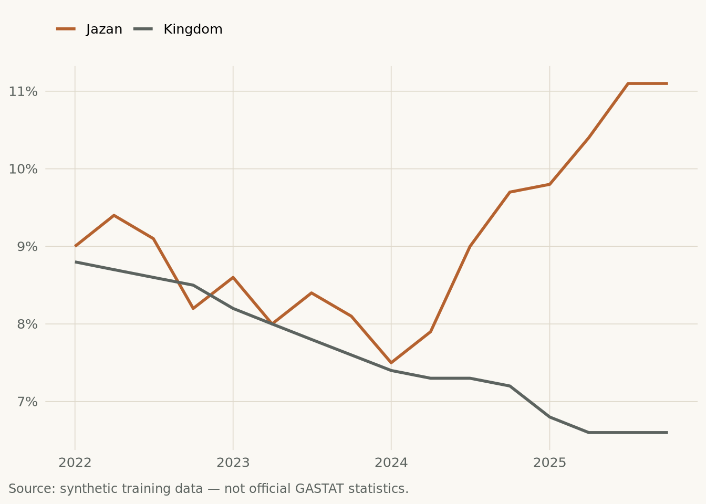

Labour Market Bulletin
Jazan
Jazan: unemployment at 11.1% in 2025Q4
Unemployment in Jazan stands at 11.1%, 4.5 points above the Kingdom rate of 6.6%.
NoteWhat this means
The gap to the Kingdom average has widened over the series.
How the rate moved
The last six quarters
| Quarter | Rate (%) |
|---|---|
| 2024Q3 | 9.0 |
| 2024Q4 | 9.7 |
| 2025Q1 | 9.8 |
| 2025Q2 | 10.4 |
| 2025Q3 | 11.1 |
| 2025Q4 | 11.1 |
Source: synthetic training data — not official GASTAT statistics.